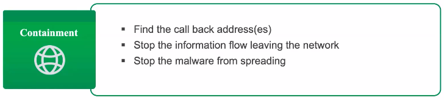

Incident Respond and Recover
The
Respond Function supports the ability to contain the impact of a potential cybersecurity event. Examples of outcome Categories within this Function include: Response Planning; Communications; Analysis; Mitigation; and Improvements.
The
Recover Function supports timely recovery to normal operations to reduce the impact from a cybersecurity event. Examples of outcome Categories within this Function include: Recovery Planning; Improvements; and Communications.